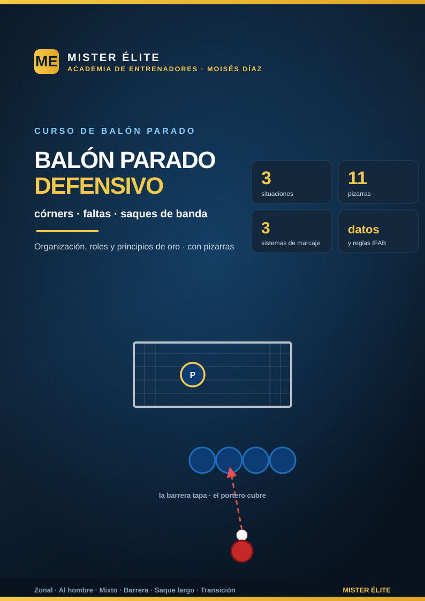

Balón parado defensivo — córners, faltas y saques de banda
Cómo defender las acciones a balón parado, con pizarras y roles claros
Bienvenido al curso de balón parado defensivo de MISTER ÉLITE — Moisés Díaz. El balón parado decide partidos: en la Premier League 2022-23, casi el 14 % de todos los goles llegaron de córner. Defenderlo bien no es cuestión de suerte: es organización, roles memorizados y unos cuantos principios de oro.
Este curso te da el método y las pizarras para defender las tres grandes situaciones: córners, faltas y saques de banda.
La idea que atraviesa el curso: a balón parado no se "improvisa". Cada jugador debe saber su tarea de memoria —su zona o su hombre—, atacar el balón (no esperarlo) y ganar el primer contacto. Eso anula la jugada ensayada del rival.
Filosofía del curso
- Poca teoría, mucha pizarra. Lo justo de concepto; el resto, esquemas con los roles de cada jugador.
- Roles claros y memorizados. Cada uno sabe qué defiende antes de que el rival saque.
- Principios de oro repetidos. No perder el primer palo, atacar el balón, despejar alto-lejos-ancho, comunicar.
- Fundamentado. Datos y posiciones de fuentes profesionales (FIFA Training Centre, análisis del Mundial 2022, leyes IFAB/FA).
Cómo está organizado
Teoría (2 módulos): 1. Fundamentos — por qué importa, los datos y los principios de oro del balón parado defensivo. 2. Sistemas de marcaje — zonal, al hombre y mixto/híbrido: pros, contras y cuándo usar cada uno.
Práctica (con pizarras): - Cómo defender — índice y principios rápidos. - Córners — zonal, al hombre, mixto, inswinger/outswinger, en corto y la transición. - Faltas — la barrera, falta lateral, cuántos en la barrera, saltador, tumbado y fuera de juego. - Saques de banda — en campo propio y el saque largo (tipo Delap) defendido como un córner.
Cómo usar el curso
- Lee los 2 módulos (rápido). Quédate con los principios de oro y la elección de sistema.
- Define con tu equipo el sistema de córner (recomendado: mixto) y reparte roles.
- Lleva al campo las pizarras de cada situación y asígnale a cada jugador su zona o su hombre.
- Ensaya y repite: el balón parado se defiende de memoria, no pensando.
Las cifras y posiciones provienen de fuentes profesionales; adáptalas a tu rival, tu portero y tu categoría.
MISTER ÉLITE — Moisés Díaz · Academia de entrenadores